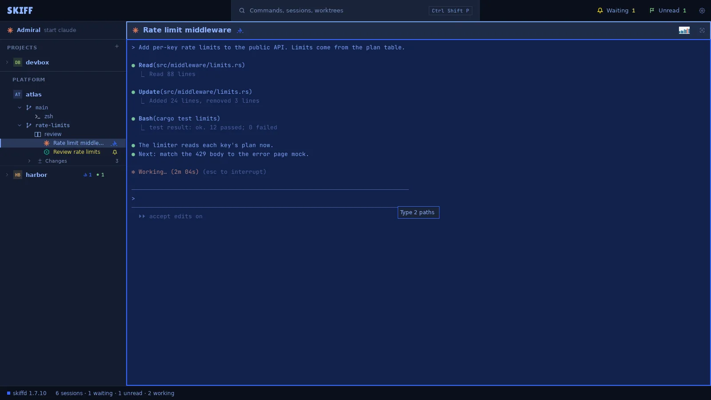
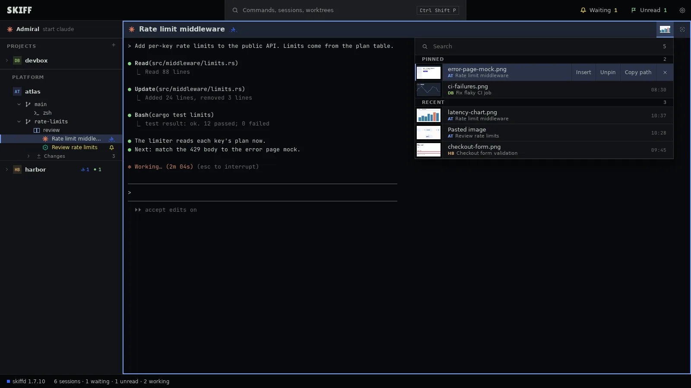

Skiff
SkiffDrop images
An agent can read an image when it has its path. Drop an image on a pane and Skiff types the path for you. Every image you drop or paste goes to one library on this computer, so any session can use it again.
Chapter 6 of 9 · Skiff user guide
Drop or paste
- Drag a file from your file manager or another app over a pane. The pane shows a frame and a label: Type the path, or the number of paths.
- Drop it. Skiff copies an image to the library and types the path of the copy into the pane, with a space after it. Other files keep their own path. Then type your prompt and press Enter.
- Or paste with Ctrl+Shift+V (⌘V on macOS). Text pastes as text. An image on the clipboard is saved as a PNG named Pasted image, and its path is typed. Bare Ctrl+V stays with the terminal.
- Drop several files at once. Each gets its own path.

Skiff knows an image by its first bytes, not by its name. An image over 50 MB is not copied: Skiff types its own path. When Skiff starts Claude Code, it gives it read access to the library folder.
The library
- Point at a pane header. Its image button shows the newest image. Click it to open the library under the header. Images… in the pane's right-click menu, in the Edit menu and in the palette opens it too.
- Pinned images come first under PINNED, then the rest under RECENT, newest first. Each row shows the image, its name, and the session that last got it. Type in the search field to filter the list.
- Point at a row for its actions. Insert (I) types the path into the focused pane. Pin (P) keeps the image when Skiff flushes the library. Copy path (C) copies it. × (Delete) deletes the file.
- Click a row, or press Enter, to open the image in the app from Settings › Open with › Images. Up and Down move the lit row. Esc closes the library.
- Drag an image from the library onto any pane to insert its path there.

The library is the cache folder in the Skiff agent's folder. Settings › Images shows it as a gallery, and Settings › Disk use flushes it. See chapter 9.